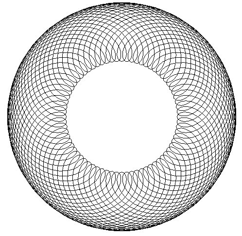
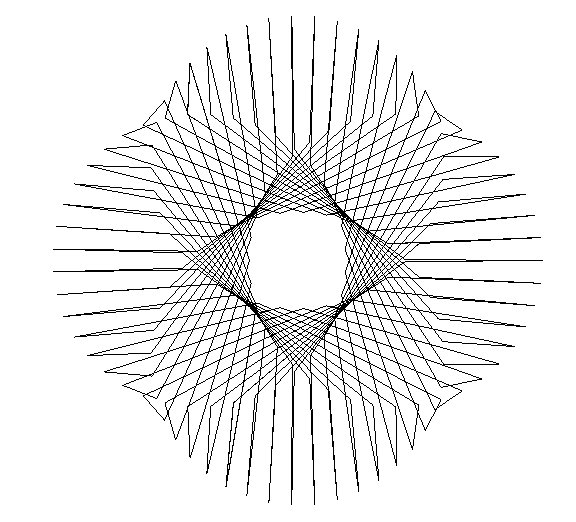
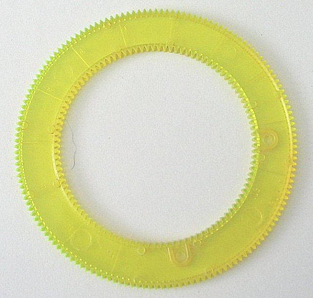
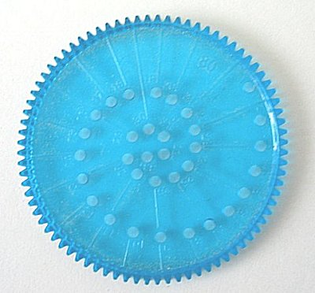

The ShopBot-O-Graph
Q) What in the world is a ShopBot-O-Graph?
A) Just what it sounds like...a spirograph for your ShopBot. I've always been fascinated by geometry and spirographs so the sbograph was one of the first Visual Basic programs that I wrote. It still one of my favorites. The ShopBot-O-Graph not only lets you do traditional spirograph patterns like this...

...but also patterns like this...
...and this...

Q) I don't get it...what's this "ring" and "rolling" gear business?
A) Imagine the old toy the Spirograph. It had a stationary "ring gear"...

that you fastened down to your piece of paper and then a "rolling gear"...

...that you rolled around the inside...
...or outside...
..of the ring gear.
Q) What about the "pen offset" part?
A) To draw with a spirograph you put a pen in one of the holes in the rolling gear and moved the rolling gear (and the pen). The pen holes in the rolling gear were in a spiral pattern, and the pen offset was the distance that the hole you had your pen in was from the center of the rolling gear.
Q) Any other cool features?
A) Not really, other than the ability to vary all the setting by a whole lot more than you could in the original set. You can not only make the gears a whole lot bigger or smaller, but you can also make the pen offset more than 100% for some interesting effects. You also have the ability to change the resolution...the number of segments that one revolution is broken into...which lets you draw some pretty neat designs. The best thing to do is to just play with it and try some things.
Q) I don't know how to say this delicately..what GOOD is it?
A) Other than the obvious fun factor, not much practical use I'm afraid. I have cut corner blocks...the ones that go in the corner of window and door trim... that ended up being pretty cool for a math teacher, but to tell you the truth that's the only useful thing I've ever done with it. Might be interesting to play with decorating some other architectural details with them like doors or wainscoting. I've cut a ton of them with kids too, and think it lets them do something that's uniquely their own with a ShopBot and computer without being intimidated. But basically it's just fun to play with.
Have fun, and if you've got any suggestions or gripes, send it to me at billyoung@shopbottools.com